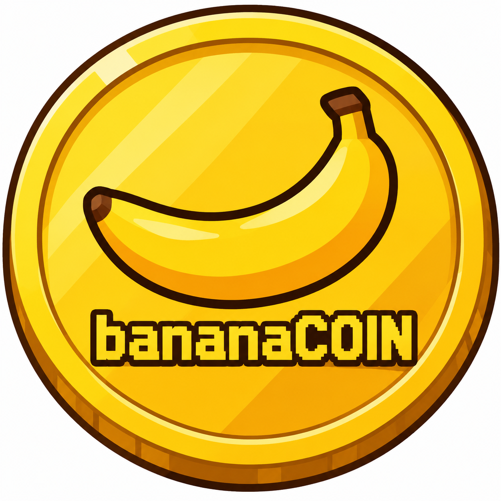
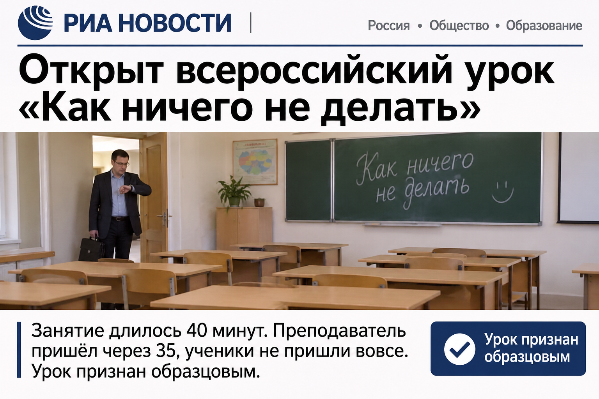
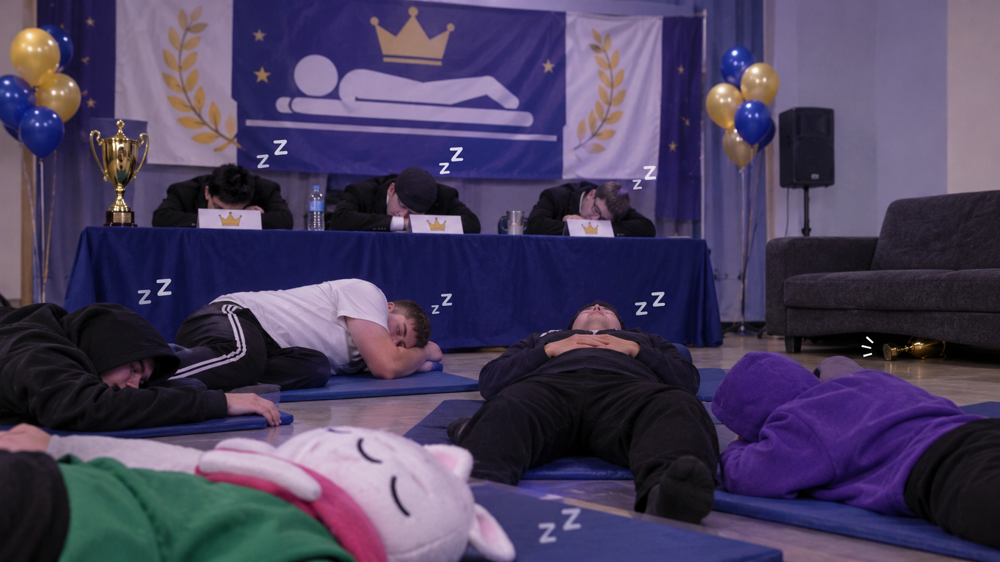
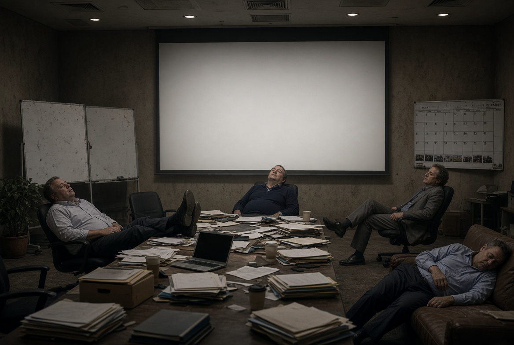

Достижения
Банан месяца три дня не вставал с дивана и победил
Жюри единогласно решило, что конкурентов у него не было: все остальные участники опоздали, проспали или забыли, что вообще участвуют.
1 апреля
 Движение Последних
Движение Последних
Регистрация прошла успешно. Или нет. Мы не проверяли.
Только самое бесполезное

Жюри единогласно решило, что конкурентов у него не было: все остальные участники опоздали, проспали или забыли, что вообще участвуют.

Занятие длилось 40 минут. Преподаватель пришёл через 35, ученики не пришли вовсе. Урок признан образцовым.

Судьи тоже уснули, поэтому результат утверждён задним числом. Кубок так и не нашли, он лежит где-то под диваном.
Исследование заняло 12 лет, потому что его всё время откладывали на потом. Выводы засекречены, потому что их потеряли.
Эксперты советуют не паниковать и вообще ничего не предпринимать. Совет, впрочем, всем и так понравился.

Руководитель проекта сообщил, что в целом всё идёт по плану, просто плана нет. Следующее совещание перенесли, потому что лень идти.